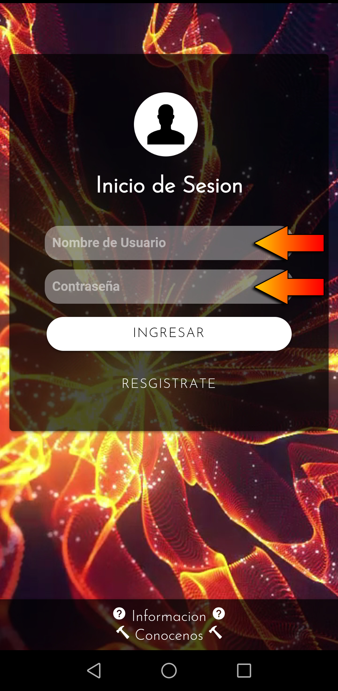
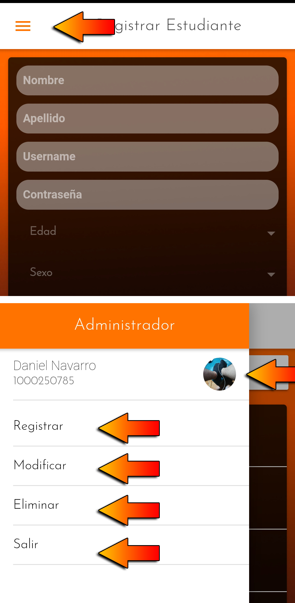
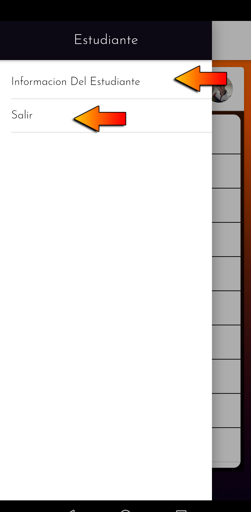
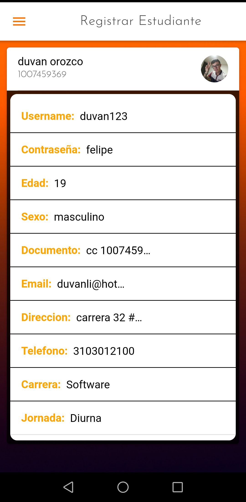

La aplicacion esta enfocada en registros, existen dos tipos de usuarios, los ADMINISTRADORES y los ESTUDIANTES, los Administradores
se registran en el Inicio de Sesion, pero requieren de un codigo de Administrador especial. A su vez, los administradores pueden
registrar, modificar y eliminar usuarios tipo Estuante.
Los usuarios tipo Estudiante podran ingresar si su registro fue previamente realizado por un Administrador, estos podran ver solo su
informacion ingresada.
1. Damos click en el boton "REGISTRATE" si no tienes una cuenta de ADMINISTRADOR, si es asi, Inicia Sesion con el
Username y la Contraseña.
Nota: Esta opcion es solo para registrar ADMINISTRADORES, los Admin podran registrar,
modificar y eliminar Estudiantes.
2. Llenamos todos los campos con nuestra informacion personal y al finalizar damos en el boton "REGISTRAR".
Aviso: El codigo de ADMINISTRADOR es obligatorio. Tener en cuenta los
caracteres y las Mayusculas.
3. Al realizar el registro, ingresamos en la pestaña de Inicio de Sesion con el Username y Contraseña previamente creado. Tener en cuenta los caracteres y las Mayusculas.
Al ingresar tendremos un menu deslizable en la esquina superior izquierda, donde encontraremos todas las funciones de Administrador. Al desplegar el menu abra un apartado con nuestra informacion y foto de perfil.
1. El inicio de administrador cuenta con un REGISTRO, este sirve para registrar Usuarios nuevos tipo Estudiantes.
Nota: Es obligatorio llenar todos los campos que se encuentran en el registro. Tener en cuenta los
caracteres y las Mayusculas.
2. En la pestaña de Modificar, podremos modificar la informacion de todos los Estudiantes previamente registrados,
dandole al boton modificar, y luego reingresando los TODOS datos del formulario.
Nota: No se puede modificar la infomacion de los Administradores registrados.
3. La pestaña de Eliminar, es para eliminar cualquier usuario tipo Estudiante previamente registrado.
Nota: Los usuarios eliminados no se podran recuperar a no ser que sean nuevamente registrados por el Administrador.
1. Ingresamos con el Username y Contraseña de Estudiante previamente registrado por el Administrador.
Nota: Si el administrador modificó o eliminó el usuario no se podra ingresar, tener en cuenta los
caracteres y las Mayusculas.
2. Tendremos un menu de usuario con dos opciones, Informacion del Estudiante y salir.
3. La opcion de Informacion del Estudiante nos mostrara una lista con los datos del Estudiante previamente ingresados por el Administrador.
